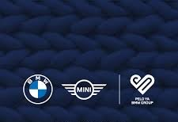

Pelo Ya BMW Group is the Corporate Social Investment (CSI) platform of BMW Group South Africa, focused on creating sustainable impact through education, community development, and social upliftment initiatives. As a community volunteer, I contribute my time and effort toward programmes that extend BMW Group's values of social responsibility beyond the workplace and into the communities it serves.
Key Contributions
- Participated in community outreach programmes supporting local schools, youth development, and social upliftment initiatives.
- Contributed to Mandela Day activities by assisting with community support projects and donation drives.
- Collaborated with BMW Group South Africa employees and community partners to deliver meaningful social impact programmes.
- Supported initiatives aimed at empowering underserved communities through education and development opportunities.
- Promoted BMW Group values of social responsibility, teamwork, and community engagement.
Skills Developed
- Teamwork & Collaboration
- Community Engagement
- Leadership & Accountability
- Communication Skills
- Problem Solving
- Social Impact Awareness
Impact
Through Pelo Ya BMW Group, I have had the opportunity to contribute beyond the workplace by participating in community development initiatives focused on education, social upliftment, and creating positive, lasting impact within local communities.